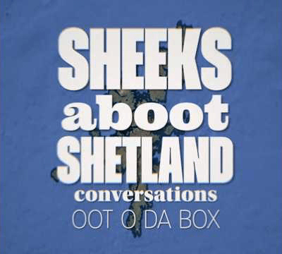

Daniel Gear is many things, but one thing he definitely is, is lightsome. In this podcast Daniel talks about the meaning of "lightsomeness", how it is built into the philosophy of his company Voar Energy and how today's social media environment poses a challenge to that very Shetland approach to the life we share on these remote peerie islands.

Ten days after being elected as Shetland's first SNP MSP, Hannah Mary Goodlad talks about the experience of being jettisoned into the world of the Scottish Parliament, her hopes and plans for the next five years and the values she will seek to uphold during her tenure representing the isles on the national stage.

A historic day in Shetland. Jane and Pete react to Hannah Mary Goodlad of the SNP convincingly ending the 76 year Liberal Democrat hold on the Shetland Islands. She now goes on to Holyrood to give Shetland a voice in the Scottish Government for the first time since Tavish Scott was Minister of Transport two decades ago.

With less than 24 hours to go before voting starts in the 2026 Scottish Government elections, it's neck and neck between the SNP and the LibDems. In this episode Jane and Pete share their thoughts about the candidates they have had a sheeks with since the launch of the podcast less than three weeks ago. Conspicuous by her absence is lead candidate Emma Macdonald who, unlike the other four local candidates, could not find a spare hour in her campaign schedule to speak to us. Disappointing.

With just one day to go before the election of the next MSP for Shetland, Jane and Pete speak with Peter Tait, an independent candidate with deep Shetland roots, who believes that if the monarchy of Scotland was returned north of the border, life would improve for the country as a whole.

In our latest conversation with the candidates, Jane and Pete sheeks with Hannah Mary Goodlad of the SNP who has been campaigning to win the Shetland seat from the LibDems for the past year. We cover a lot of ground in this episode, where Hannah Mary outlines her vision of a confident Shetland making the most of its strengths, including its wealth, based on her experience of working in industry, living in Scandinavia and visiting the Faroe Islands.

In the second of our conversations with election candidates, Jane and Pete sheeks with Brian Nugent whose party Sovereignty has teamed up with other parties to form The Alliance to Liberate Scotland in a bid to challenge the SNP and the Greens on their "weak stance" on fighting for Scottish independence.

In the first of a series of conversations with Shetland's election candidates, Jane and Pete have a sheeks with Alex Armitage of the Scottish Greens about his background, his campaign to build a movement and how he feels about the rise of the far right and the attacks he has come under recently.

Jane and Pete introduce the first episode of Sheeks About Shetland. Jane is a seasoned broadcaster with BBC Radio Shetland while Pete has reported for The Shetland Times, BBC Radio Shetland and Shetland News.